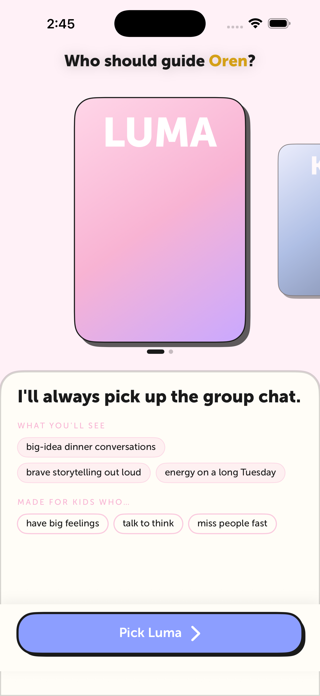
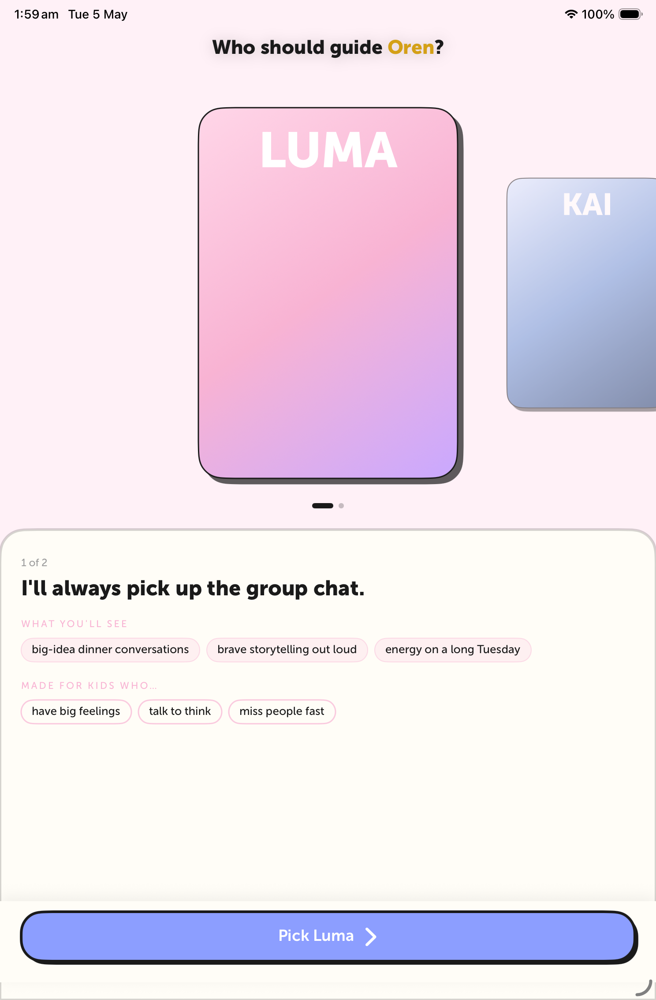
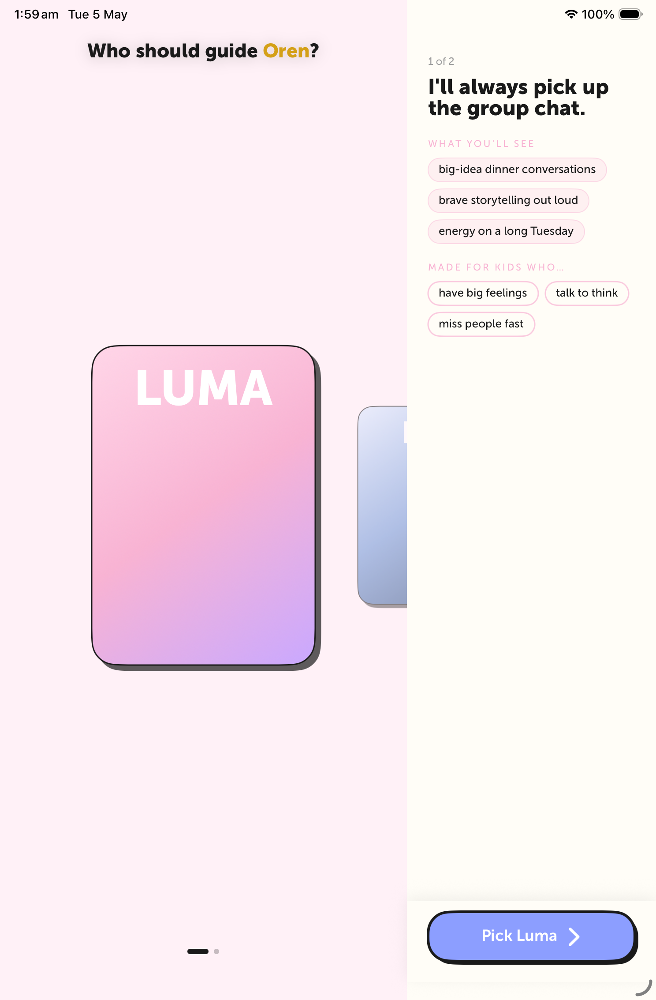

iPhone 17 Pro Max — Luma focal
Title "Who should guide Oren?" with the kid's name highlighted in
theme.goldAccent, matching the rest of the onboarding accent-headline
pattern. No subtitle. Lore sheet shows tagline + 3 outcome pills + 3 fit pills,
with "Pick Luma" pinned at the bottom.

iPad mini — Luma focal, portrait
Same composition with iPad-tuned spacing. Pills sit on one row each on this viewport size. "1 of 2" carousel indicator visible top-left of the sheet.

iPad mini — Luma focal, landscape composition
Landscape uses OnboardingLandscapeSplit — cover-flow hero on the
left, lore panel on the right with tagline → outcome pills → fit pills → pinned
CTA footer.
Caveat: the macOS Simulator rotation API was blocked in this environment
(System Events accessibility refused), so dimensions stay iPad-portrait — but the
SwiftUI composition rendered inside is the actual landscape layout. On a real
iPad in landscape the columns breathe wider.

What's new vs. v2
- Title style: matches onboarding accent-headline pattern.
"Who should guide [Name]?"with the name in gold (theme.goldAccent). - Subtitle dropped: "Each one shows up differently. Pick the guide you want by [name]'s side." — gone. Headline alone.
- Two-beat prose dropped: "Bright, fast, full of plans. With [name] she'll be the one keeping the chat alive…" — gone. Tagline + pills carry the message; sheet is much less text-heavy.
- Pills trimmed: 5 → 3 per row. Tighter, more scannable.
- Scroll + pinned CTA: lore sheet content is now in a
ScrollView; the "Pick X" button sits in a fixed footer with a soft top-shadow, always reachable regardless of scroll position. Fixes the v2 issue where the CTA was clipped on small phones.